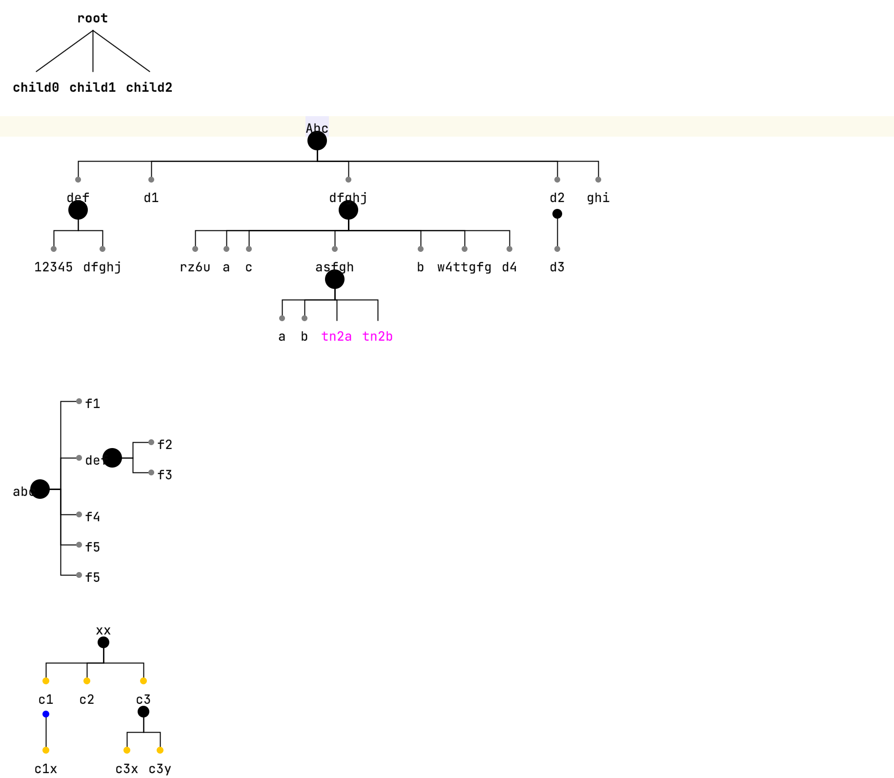

Tree Notation
Language Namespace : com.mbeddr.mpsutil.treenotation
The tree notation language adds support for cells that can render tree-like structures. Add a new treeCell to the editor.
The root of the tree is a cell that should be declared above the "/|\" text. Below, the child cells can be added.
There can be an unlimited number of levels of tree cells with children.
The following layouts are supported:
- default tree layout layouts the tree from top to bottom unless tree-left-to-right is set. The lines from the root take the direct paths to the children.
- orthogonal tree layout is the same as the default layout but the lines from the root to the children are drawn orthogonally
- compact tree layout extends the orthogonal tree layout and adds a button for expanding and collapsing the tree

The following style attributes are supported:
- tree-left-to-right layouts the tree from left to right instead of top to bottom.
- tree-node-spacing is the space between child nodes (default: 10, unit: pixel).
- tree-node-spacing is the space between different levels of the tree (default: 35, unit: pixel).
- tree-incoming-line-color is the color of the line from the root cell to the child cell (default: black).
- tree-incoming-line-width is the thickness of the line from the root cell to the child cell (default: 1, unit: pixel).
- tree-incoming-shape is the space at the end of the line from the root cell to the child cell.
- tree-transparent-collection: when a
TreeCellis queried from the editor, and the current cell is a collection, consider the collection as transparent and return the first not null child cell instead. - tree-button-opacity is the opacity of buttons in the tree. It's a function with the signature
{double => double}. It receives the euclidean distance from the mouse position to the upper left corner of the button as an argument and should return a transparency value from 0 to 1 where 0 is invisible and 1 is opaque. - tree-show-delete-icon is a flag that decided if the delete icon should be shown for the displayed cell (default: true).
There are also some settings in the inspector of the TreeCell:
- delete: a handler that's invoked when the delete action is invoked.
- insert child: a handler that's invoke when the insert button is used to insert a child.
- outgoing shape: the shape at the start of lines that start from this cell
- incoming shape the shape at the end of lines that end at this cell
- collapse by default: collapse all child tree cells by default